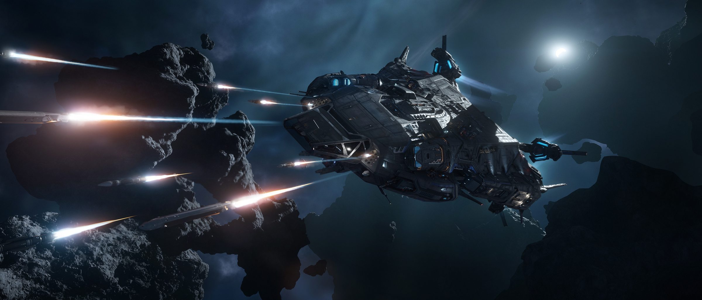
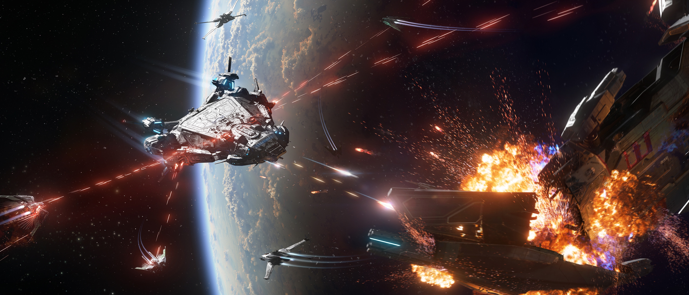
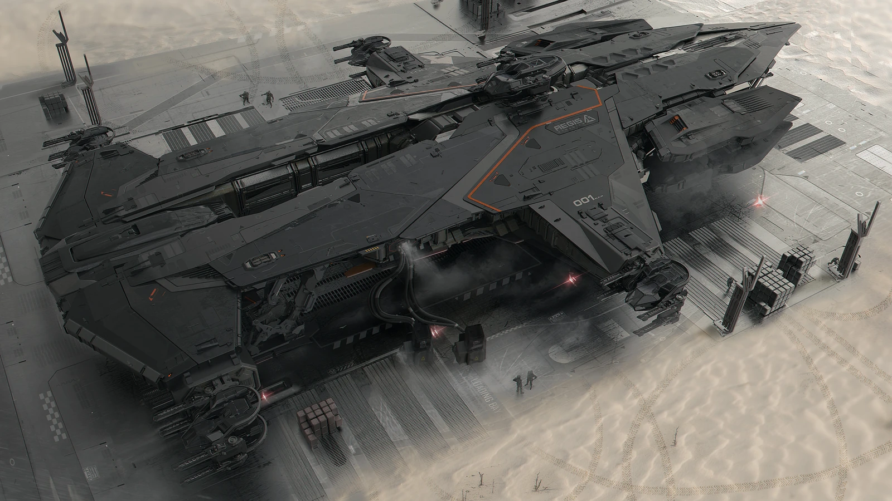

Fleet Week 2955Hunt The Polaris
Waehrend der Fleet Week stehlen die Frontier Fighters eine RSI Polaris — und der ganze Server jagt sie quer durch Stanton bis zum letzten Gefecht an einem fluechtigen Wurmloch.
Mitten in der Flottenparade greifen die Frontier Fighters nach dem grössten Preis am Himmel — einer kompletten RSI Polaris. Was als Fleier beginnt, wird zur server-weiten Hetzjagd durch ganz Stanton.
Eine Korvette flieht. Ein ganzer Server jagt.Hunt The Polaris · Fleet Week 2955
So läuft die Jagd
Der Raub
Während der Fleet Week reissen die Frontier Fighters eine RSI Polaris an sich — eine Kapital-Korvette von Roberts Space Industries — und brechen mit ihr aus der Flottenschau aus.
Die Hetzjagd
Die gestohlene Polaris flieht quer durch Stanton. Der ganze Server schliesst auf — Jäger aus jedem Winkel des Systems nehmen die Korvette ins Visier.
Das letzte Gefecht
Die Flucht endet an einem flüchtigen Wurmloch. Hier kommt es zur entscheidenden Schlacht um die Polaris, bevor das Tor sich wieder schliesst.
Geteilte Beute
Fällt die Korvette, wird die Belohnung unter allen Beteiligten geteilt. Wer mitgejagt hat, bekommt seinen Anteil — die Jagd lohnt sich für den ganzen Server.
⚑ Frontier Fighters
- Stehlen mitten in der Fleet Week eine ganze RSI Polaris.
- Fliehen mit der Kapital-Korvette quer durch Stanton.
- Steuern auf ein flüchtiges Wurmloch als Fluchtweg zu.
- Müssen das letzte Gefecht überstehen, um zu entkommen.
★ Der Server
- Jeder Spieler im Shard kann sich der Jagd anschliessen.
- Die Verfolgung zieht sich durch das ganze System Stanton.
- Am Wurmloch fällt die Entscheidung über die Polaris.
- Die Belohnung wird unter allen Beteiligten aufgeteilt.
Alpha 4.1.1 brachte ein neues Recoil-System für Schiffs- und Fahrzeugwaffen — mit sichtbaren Effekten beim Feuern. Jeder Schuss in der Jagd auf die Polaris fühlt sich jetzt schwerer und greifbarer an.
Volle Magazine für die Türme
Mit 4.1.1 wurde die Turret-Munition vieler Schiffe stark erhöht. Wer in der Hetzjagd die Geschütztürme bemannt, muss seltener nachladen und hält länger im Gefecht.
Die RSI Polaris selbst ist ausdrücklich unter den betroffenen Schiffen — die Korvette im Zentrum der Jagd profitiert direkt vom aufgestockten Munitionsvorrat ihrer Türme.
Hunt The Polaris ist eine server-weite Mission aus Alpha 4.1.1, eingebettet in die Fleet Week / Invictus 2955 — das jährliche Flottenfest des Verse, bei dem die grössten Schiffe der UEE Seite an Seite stehen.
Galerie

⤢
⤢
⤢ ⤢
⤢Quelle: Star Citizen Wiki & offizielle Patch-Notes zu Alpha 4.1.1 (© Cloud Imperium Games). · Inoffizielles Fan-Projekt.